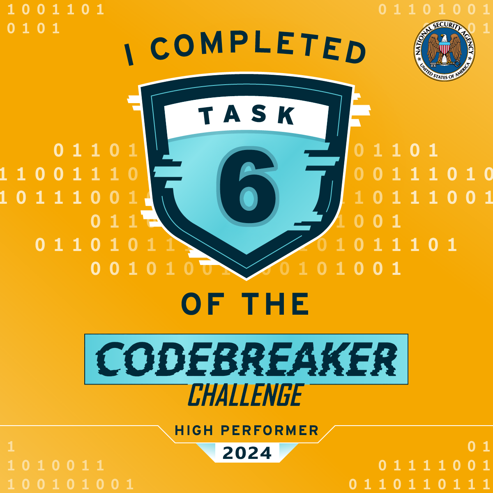

Task 6 - It's always DNS - (Reverse Engineering, Cryptography, Vulnerability Research, Exploitation)
The recovered data indicates the APT is using a DNS server as a part of their operation. The triage team easily got the server running but it seems to reply to every request with errors.
You decide to review past SIGINT reporting on the APT. Why might the APT be targeting the Guardian Armaments JCTV firmware developers? Reporting suggests the APT has a history of procuring information including the location and movement of military personnel.
Just then, your boss forwards you the latest status update from Barry at GA. They found code modifications which suggest additional DNS packets are being sent via the satellite modem. Those packets probably have location data encoded in them and would be sent to the APT.
This has serious implications for national security! GA is already working on a patch for the firmware, but the infected version has been deployed for months on many vehicles.
The Director of the NSA (DIRNSA) will have to brief the President on an issue this important. DIRNSA will want options for how we can mitigate the damage.
If you can figure out how the DNS server really works maybe we will have a chance of disrupting the operation.
Find an example of a domain name (ie. foo.example.com.) that the DNS server will handle and respond with NOERROR and at least 1 answer.
Prompt:
Solving the task:
This one stumped me almost as long as task 3 did, but it became my favorite task by far.
As we saw from the previous task, we end up with three files from the USB:
The makeup of the Corefile gives us a very specific regex that we are going for:
Corefile:
.:1053 {
acl {
allow type A
filter
}
view firewall {
expr type() == 'A' && name() matches '^x[^.]{62}\\.x[^.]{62}\\.x[^.]{62}\\.net-zghn2ybn\\.example\\.com\\.$'
}
log
cache 3600
errors
frontend
}
From my research, I found that Coredns uses a chain of 'plugins' and loads the Corefile for its configuration which includes those plugins. Based on the task and the Corefile, we are looking for a domain that is of record type A, provides a NOERROR response, and matches this regex:
x[62 characters].x[62 characters].x[62 characters].net-zghn2ybn.example.com.
Seems straight forward: find the domain -- but what is that microservice?.. We'll get back to that.
From my CoreDNS research, I also found that there is a debug plugin that gives more logging details (similar to Task 3's loglevel). I just needed to add it to the Corefile, run the DNS server, and then generate a DNS query:
Note: The dig and response lines were one line, but I had to edit the formatting to not mess with the rest of the site formatting.
DNS query:
nomad@LAPTOP-7SLS1EV9:~$ dig @localhost -p 1053 xabcdefghijklmnopqrstuvwxyz0123456789abcdefghijklmnopqrstuvwxyz. xabcdefghijklmnopqrstuvwxyz0123456789abcdefghijklmnopqrstuvwxyz.xabcdefghijklmnopqrstuvwxyz0123456789abcdefghijklmnopqrstuvwxyz.net-zghn2ybn.example.com. ;; communications error to 127.0.0.1#1053: timed out ;; communications error to 127.0.0.1#1053: timed out ;; communications error to 127.0.0.1#1053: timed out ; <<>> DiG 9.18.33-1~deb12u2-Debian <<>> @localhost -p 1053 xabcdefghijklmnopqrstuvwxyz0123456789abcdefghijklmnopqrstuvwxyz.xabcdefghijklmnopqrstuvwxyz0123456789abcdefghijklmnopqrstuvwxyz. xabcdefghijklmnopqrstuvwxyz0123456789abcdefghijklmnopqrstuvwxyz.net-zghn2ybn.example.com. ; (1 server found) ;; global options: +cmd ;; no servers could be reached
CoreDNS log:
nomad@LAPTOP-7SLS1EV9:~$ ./coredns .:1053 CoreDNS-1.11.3 linux/amd64, go1.21.8, a7ed346-dirty [DEBUG] plugin/frontend: type: 1 [ERROR] plugin/frontend: error decoding input: xabcdefghijklmnopqrstuvwxyz0123456789abcdefghijklmnopqrstuvwxyz.xabcdefghijklmnopqrstuvwxyz0123456789abcdefghijklmnopqrstuvwxyz. xabcdefghijklmnopqrstuvwxyz0123456789abcdefghijklmnopqrstuvwxyz.net-zghn2ybn.example.com. as: ABCDEFGHIJKLMNOPQRSTUVW=0123456789ABCDEFGHIJKLMNOPQRSTUVW=ABCDEFGHIJKLMNOPQRSTUVW=0123456789ABCDEFGHIJKLMNOPQRSTUVW= ABCDEFGHIJKLMNOPQRSTUVW=0123456789ABCDEFGHIJKLMNOPQRSTUVW= [DEBUG] plugin/frontend: bad name: illegal base32 data at input byte 22 [INFO] 127.0.0.1:34062 - 50384 "A IN xabcdefghijklmnopqrstuvwxyz0123456789abcdefghijklmnopqrstuvwxyz.xabcdefghijklmnopqrstuvwxyz0123456789abcdefghijklmnopqrstuvwxyz. xabcdefghijklmnopqrstuvwxyz0123456789abcdefghijklmnopqrstuvwxyz.net-zghn2ybn.example.com. udp 257 false 1232" NXDOMAIN qr,aa,rd 464 0.0008625s [INFO] 127.0.0.1:38235 - 50384 "A IN xabcdefghijklmnopqrstuvwxyz0123456789abcdefghijklmnopqrstuvwxyz.xabcdefghijklmnopqrstuvwxyz0123456789abcdefghijklmnopqrstuvwxyz. xabcdefghijklmnopqrstuvwxyz0123456789abcdefghijklmnopqrstuvwxyz.net-zghn2ybn.example.com. udp 257 false 1232" NXDOMAIN qr,aa,rd 464 0.0001546s [INFO] 127.0.0.1:39560 - 50384 "A IN xabcdefghijklmnopqrstuvwxyz0123456789abcdefghijklmnopqrstuvwxyz.xabcdefghijklmnopqrstuvwxyz0123456789abcdefghijklmnopqrstuvwxyz. xabcdefghijklmnopqrstuvwxyz0123456789abcdefghijklmnopqrstuvwxyz.net-zghn2ybn.example.com. udp 257 false 1232" NXDOMAIN qr,aa,rd 464 0.0000717s
Here we get some pretty interesting data. The error we get in the CoreDNS log is bad name: illegal base32 data at input byte 22. The DNS server looks like it combines each subdomain into one string, and (with some trial and error) removes the .'s, W's, X's, Y's, and top-level and also turns Z's into ='s. With some more research, I found that this isn't traditional Base32 encoding, but instead Base32 encoding with extended hex alphabet, which is mainly used with DNS (go figure).
I then found a site that does online RFC 4648 encoding and encoded this string to Base32Hex: abcdefghijklmnopqrstuvwxyz0123456789 which gave this encoding: C5H66P35CPJMGQBADDM6QRJFE1ON4SRKELR7EU3PF8O32CHJ6GQJCDPO74======.
The next step was to query the DNS server once more and record the results -- but this time, I removed the length requirements by removing the entire view firewall block. Through more trial and error, I found out that the domain still needed to be three parts separated by '.x' while also changing the '=' to 'z'. Here is the new query followed by the results:
DNS query:
nomad@LAPTOP-7SLS1EV9:~$ dig @localhost -p 1053 xC5H66P35CPJMGQBAD.xDM6QRJFE1ON4SRKELR7.xEU3PF8O32CHJ6GQJCDPO74zzzzzz.net-zghn2ybn.example.com. ;; communications error to 127.0.0.1#1053: timed out ;; communications error to 127.0.0.1#1053: timed out ;; communications error to 127.0.0.1#1053: timed out ; <<>> DiG 9.18.33-1~deb12u2-Debian <<>> @localhost -p 1053 xC5H66P35CPJMGQBAD.xDM6QRJFE1ON4SRKELR7.xEU3PF8O32CHJ6GQJCDPO74zzzzzz.net-zghn2ybn.example.com. ; (1 server found) ;; global options: +cmd ;; no servers could be reached
CoreDNS log:
nomad@LAPTOP-7SLS1EV9:~$ ./coredns .:1053 CoreDNS-1.11.3 linux/amd64, go1.21.8, a7ed346-dirty [DEBUG] plugin/frontend: type: 1 [DEBUG] plugin/frontend: got data: 6162636465666768696a6b6c6d6e6f707172737475767778797a30313233343536373839 [DEBUG] plugin/frontend: bad decrypt: bad handshake [INFO] 127.0.0.1:50271 - 55434 "A IN xc5h66p35cpjmgqbad.xdm6qrjfe1on4srkelr7.xeu3pf8o32chj6gqjcdpo74zzzzzz.net-zghn2ybn.example.com. udp 135 false 1232" NXDOMAIN qr,aa,rd 240 0.0066028s [INFO] 127.0.0.1:49007 - 55434 "A IN xc5h66p35cpjmgqbad.xdm6qrjfe1on4srkelr7.xeu3pf8o32chj6gqjcdpo74zzzzzz.net-zghn2ybn.example.com. udp 135 false 1232" NXDOMAIN qr,aa,rd 240 0.0002721s [INFO] 127.0.0.1:49887 - 55434 "A IN xc5h66p35cpjmgqbad.xdm6qrjfe1on4srkelr7.xeu3pf8o32chj6gqjcdpo74zzzzzz.net-zghn2ybn.example.com. udp 135 false 1232" NXDOMAIN qr,aa,rd 240 0.0001346s
Here we can see even more interesting data, which helped me understand even more about this DNS server: the Base32Hex encoded string is some kind of encrypted data handshake, identified by the bad decrypt: bad handshake line. Unfortunately this was the end of the road for the CoreDNS server at this point in time -- I wasn't too familiar with stripped Golang binaries and hit a breaking point. So I started looking at the microservice. (again, don't mind the timestamps... was a little late getting to the writeups):
nomad@LAPTOP-7SLS1EV9:~$ ./microservice {"t":"2025-03-01T04:18:36.623Z","l":"ERROR","m":"Failed to connect to MongoDB"} {"t":"2025-03-01T04:18:36.708Z","l":"ERROR","m":"Failed to connect to the database"} {"t":"2025-03-01T04:18:36.708Z","l":"INFO","m":"Disconnected from MongoDB"}
Here we see the microservice looks like it attempts to connect to a MongoDB instance.
Seeing as we are dealing with a DNS server that handles encrypted data, a database server of some kind, and an APT who is targeting GPS location data from military vehicles -- I had a gut instinct on where this task was going. I just needed to finish setting up the playground. I also unknowingly did 75% of the work for Task 7 during this task, but I'll keep it in this task write up since these write ups are the process of my solves.
I'll initiate a MongoDB instance with the default ports and then restart the microservice:
MongoDB:
nomad@LAPTOP-7SLS1EV9:~$ sudo mongod {"t":{"$date":"2025-03-01T17:18:53.267-05:00"},"s":"I", "c":"NETWORK", "id":22943, "ctx":"listener","msg":"Connection accepted","attr":{"remote":"127.0.0.1:48866","uuid":{"uuid":{"$uuid":"357b4019-9ad8-4049-a528-6b9228f0ec71"}},"connectionId":1,"connectionCount":1}} {"t":{"$date":"2025-03-01T17:18:53.288-05:00"},"s":"I", "c":"NETWORK", "id":51800, "ctx":"conn1","msg":"client metadata","attr":{"remote":"127.0.0.1:48866","client":"conn1","negotiatedCompressors":[],"doc":{"driver":{"name":"nodejs","version":"6.8.0"},"platform":"Deno v1.45.4, LE","os":{"name":"linux","architecture":"x64","version":"5.15.167.4-microsoft-standard-WSL2","type":"Linux"},"env":{"container":{"runtime":"docker"}}}}} {"t":{"$date":"2025-03-01T17:18:53.412-05:00"},"s":"I", "c":"NETWORK", "id":22943, "ctx":"listener","msg":"Connection accepted","attr":{"remote":"127.0.0.1:48870","uuid":{"uuid":{"$uuid":"3f96e30a-bbfd-4888-8979-ed82821cc2b0"}},"connectionId":2,"connectionCount":2}} {"t":{"$date":"2025-03-01T17:18:53.413-05:00"},"s":"I", "c":"NETWORK", "id":51800, "ctx":"conn2","msg":"client metadata","attr":{"remote":"127.0.0.1:48870","client":"conn2","negotiatedCompressors":[],"doc":{"driver":{"name":"nodejs","version":"6.8.0"},"platform":"Deno v1.45.4, LE","os":{"name":"linux","architecture":"x64","version":"5.15.167.4-microsoft-standard-WSL2","type":"Linux"},"env":{"container":{"runtime":"docker"}}}}} {"t":{"$date":"2025-03-01T17:18:53.433-05:00"},"s":"I", "c":"NETWORK", "id":6788700, "ctx":"conn2","msg":"Received first command on ingress connection since session start or auth handshake","attr":{"elapsedMillis":19}}
Microservice:
nomad@LAPTOP-7SLS1EV9:~$ ./microservice {"t":"2025-03-01T22:18:53.292Z","l":"INFO","m":"Connected to MongoDB"} {"t":"2025-03-01T22:18:53.456Z","l":"INFO","m":"Server is running on port 3000"} {"t":"2025-03-01T22:23:53.469Z","l":"INFO","m":"Maintenance task completed"} {"t":"2025-03-01T22:28:53.455Z","l":"INFO","m":"Maintenance task completed"}
There are a few things to note based on the mongodb logs:
I did some more research into port 3000, and dug deeper into the binary to find that the microservice was also running Express.js. From here, I was able to locate the webserver's routes (/event/insert and /event/test), which confirmed my gut instincts above.
We were dealing with a form of DNS tunneling where the APT seemed to be sending GPS data via DNS packets from the vehicle's modem. These DNS packets appeared to be (in theory at the time) sent to our DNS server, which then sent traffic to the microservice, which ultimately stored our vehicle location in a MongoDB server.
At this point, I would dissect the microservice even further to get it to successfully interact with the MongoDB server. I found exactly what data we needed to send the microservice (at localhost:3000) in order to send the location data to the MongoDB server.
Because that was the 75% of Task 7 I mentioned earlier, I'll leave out the extra steps in this task. After I figured out the microservice, it was a struggle to find the next step. I was lost in the sauce like a calculator kid trying to do mental math.
I took a week off from working on the challenge and allowed my brain to recoup any of the neurons I had left. I finally started looking into reverse engineering stripped binaries and found this amazing stripped Golang blog post which included a link to some of their stripped Golang recovery scripts. This is how I was able to find a small detail in Ghidra that led me down the correct path.
I tried to run the go_func.py script to recover function names but kept getting an error that no .gopclntab section was found, yet I could clearly see in the Program Tree that the section was in fact there. I also found that the magic numbers were that of Golang 1.20 (line 181 -- 0xfffffff1):
Something felt off… I stared at it for a while, and then it hit me -- it had been right in front of me the whole time. The .gopclntab section WAS there, but with a sneaky typo: .gopc1ntab. That tiny swap -- an "l" turned into a "1" -- was enough to throw everything off; Another facepalming moment.
So, I needed to modify the go_func.py script by changing the name of the section to .gopc1ntab and to also treat the identified magic number (0xfffffff1) as Golang 1.18 (used for 1.18 and above):
Note: I also got rid of the unecessary lines in the code to clean up what I was working with.
Modified go_func.py:
#Recover function names in stripped Go binaries.
#@author padorka@cujoai
#@category goscripts
#@keybinding
#@menupath
#@toolbar
from ghidra.program.model.symbol.SourceType import *
pclntab_magic = ['\xf1\xff\xff\xff\x00\x00']
#Find the .gopclntab section
def getGopclntab():
for block in getMemoryBlocks():
# Change the l to 1 here:
if block.getName() == ".gopc1ntab":
start = block.getStart()
end = block.getEnd()
print "%s [start: 0x%x, end: 0x%x]" % (block.getName(), start.getOffset(), end.getOffset())
return start
print "No .gopclntab section found."
return None
#Recover function names for Go versions 1.18 and above
def renameFunc118(start):
ptrsize= getByte(start.add(7))
if ptrsize == 8:
nfunctab = getLong(start.add(8))
textStart = getLong(start.add(8 + 2*ptrsize))
offset = getLong(start.add(8 + 3*ptrsize))
funcnametab = start.add(offset)
offset = getLong(start.add(8 + 7*ptrsize))
else:
nfunctab = getInt(start.add(8))
textStart = getInt(start.add(8 + 2*ptrsize))
offset = getInt(start.add(8 + 3*ptrsize))
funcnametab = start.add(offset)
offset = getInt(start.add(8 + 7*ptrsize))
functab = start.add(offset)
p = functab
functabFieldSize = 4
for i in range (nfunctab):
func_address = currentProgram.getAddressFactory().getAddress(hex(getInt(p)+textStart).rstrip("L"))
p = p.add(functabFieldSize)
funcdata_offset = getInt(p)
p = p.add(functabFieldSize)
name_pointer = functab.add(funcdata_offset + functabFieldSize)
name_address = funcnametab.add(getInt(name_pointer))
func_name = getDataAt(name_address)
#Try to define function name string.
if func_name is None:
try:
func_name = createAsciiString(name_address)
except:
print "ERROR: No name"
continue
func = getFunctionAt(func_address)
if func is not None:
func_name_old = func.getName()
func.setName(func_name.getValue().replace(" ", ""), USER_DEFINED)
print "Function %s renamed as %s" % (func_name_old, func_name.getValue())
else:
func = createFunction(func_address, func_name.getValue())
print "New function created: %s" % func_name
start = getGopclntab()
if start is not None:
magic = getInt(start) & 0xffffffff
if magic == 0xfffffff1:
renameFunc118(start)
else:
print "WARNING: Unknown .gopclntab magic"
Rerunning the code in Ghidra:
New function created: ds "github.com/coredns/example.validatePublicKey"
New function created: ds "github.com/coredns/example.decrypt"
New function created: ds "github.com/coredns/example.hashProtocolName"
New function created: ds "github.com/coredns/example.blake2HkdfInterface"
New function created: ds "github.com/coredns/example.getHkdf"
New function created: ds "github.com/coredns/example.decryptWithAd"
New function created: ds "github.com/coredns/example.initializeSymmetric"
New function created: ds "github.com/coredns/example.mixKey"
New function created: ds "github.com/coredns/example.mixHash"
New function created: ds "github.com/coredns/example.decryptAndHash"
New function created: ds "github.com/coredns/example.split"
New function created: ds "github.com/coredns/example.initializeInitiator"
New function created: ds "github.com/coredns/example.initializeResponder"
New function created: ds "github.com/coredns/example.readMessageA"
New function created: ds "github.com/coredns/example.readMessageRegular"
New function created: ds "github.com/coredns/example.InitSession"
New function created: ds "github.com/coredns/example.RecvMessage"
New function created: ds "github.com/coredns/example.doForwardData"
New function created: ds "github.com/coredns/example.doForwardData.func1"
New function created: ds "github.com/coredns/example.name2buffer"
New function created: ds "github.com/coredns/example.Frontend.ServeDNS"
New function created: ds "github.com/coredns/example.Frontend.Name"
New function created: ds "github.com/coredns/example.NoiseRecv"
New function created: ds "github.com/coredns/example.init.0"
New function created: ds "github.com/coredns/example.setup"
New function created: ds "github.com/coredns/example.setup.func1"
New function created: ds "github.com/coredns/example.init"
New function created: ds "github.com/coredns/example.(*Frontend).Name"
New function created: ds "github.com/coredns/example.(*Frontend).ServeDNS"
New function created: ds "type:.eq.github.com/coredns/example.noisesession"
New function created: ds "main.main"
go_func.py> Finished!
As we can see, we were able to obtain the original function names and further decompile our stripped binary. Just based on the function names we were able to recover, we can see that most of them had to do with the encryption. I ended up spending a lot of time looking in to the decompiled code of all of these functions and wrote out what I thought was the right pseudo-framework of function calls:
x[62].x[62].x[62] Query from client
|
|
V
Frontend.ServeDNS() {
- name2buffer() {
-- strip(xn--, x, y)
-- replace(z, =)
-- Base32.decode(Hexencoded(A-V, 0-9))
- }
- NoiseRecv() {
-- InitSession() {
-- -- initializeInitiator() {
-- -- -- initializeSymmetric() {
-- -- -- -- hashProtocolName() {
-- -- -- -- -- blake2sChecksum()
-- -- -- -- }
-- -- -- }
-- -- -- mixHash(x3 times, Noise_K, 25519_Ch, aChaPoly, _BLAKE2s) {
-- -- -- -- blake2sChecksum()
-- -- -- }
-- -- }
-- -- initializeResponder() {
-- -- -- initializeSymmetric() {
-- -- -- -- hashProtocolName() {
-- -- -- -- -- blake2sChecksum()
-- -- -- -- }
-- -- -- }
-- -- -- mixHash(x3 times, Noise_K, 25519_Ch, aChaPoly, _BLAKE2s) {
-- -- -- -- blake2sChecksum()
-- -- -- }
-- -- }
-- }
-- RecvMessage() {
-- -- readMessageA() {
-- -- -- validatePublicKey()
-- -- -- mixHash(no other refs) {
-- -- -- -- blake2sChecksum()
-- -- -- }
-- -- -- curve25519.scalarMult()
-- -- -- mixKey() {
-- -- -- -- getHkdf(new Hkdf)
-- -- -- }
-- -- -- decryptAndHash() {
-- -- -- -- decryptWithAd() {
-- -- -- -- -- decrypt() {
-- -- -- -- -- -- chacha20poly1305_.Open()
-- -- -- -- -- }
-- -- -- -- }
-- -- -- -- mixHash(x3 times, Noise_K, 25519_Ch, aChaPoly, _BLAKE2s) {
-- -- -- -- -- blake2sChecksum()
-- -- -- -- }
-- -- -- }
-- -- -- split() {
-- -- -- -- getHkdf(new Hkdf)
-- -- -- }
-- -- }
-- -- readMessageRegular() {
-- -- -- decryptWithAd() {
-- -- -- -- decrypt() {
-- -- -- -- -- chacha20poly1305_.Open()
-- -- -- -- }
-- -- -- }
-- -- }
-- }
- }
|
|
V
- doForwardData(msgpack -> localhost:3000/event/insert)
}
I ultimately found the next step by doing quite a bit of research, focusing on the NoiseRecv, init, and readMessage functions. This allowed me to find the Noise Protocol Framework which was what this DNS server was using -- specifically the Noise_K handshake, as identified by running strings on the CoreDNS binary and simply searching "noise":
nomad@LAPTOP-7SLS1EV9:~$ strings coredns | grep "noise" *frontend.noisesession type:.eq.github.com/coredns/example.noisesession github.com/coredns/example@v0.0.0-20200925060636-a998e071a3a3/K_noise.go github.com/coredns/example@v0.0.0-20200925060636-a998e071a3a3/noise_api.go
I then found a beta website to play around with this framework and design or explore different Noise handshake patterns. On the Noise_K handshake pattern page, there is important information about the type of vulnerability we are looking for:
Handshake Pattern Analysis: The initiator is initialized with a pre-shared long-term static key, which is assumed to be pre-authenticated out of band by the responder. The responder is initialized with a pre-shared long-term static key, which is assumed to be pre-authenticated out of band by the initiator. Message A show detailed analysis: Message A, sent by the initiator, benefits from receiver authentication but is vulnerable to Key Compromise Impersonation. If the responder's long-term private key has been compromised, this authentication can be forged...
At this point I knew that we needed to find the server's private key, since we know that this handshake pattern is vulnerable to Key Compromise Impersonation, and the server is our responder in this case. Luckily for us, the entire source code for this specific handshake written in Golang can be generated from the beta site mentioned above. Keeping in mind that the server is the responder and the initiator is the vehicle sending its coordinates, take a look at the InitSession function:
K.noise.go (InitSession):
func InitSession(initiator bool, prologue []byte, s keypair, rs [32]byte) noisesession {
var session noisesession
psk := emptyKey
if initiator {
session.hs = initializeInitiator(prologue, s, rs, psk)
} else {
session.hs = initializeResponder(prologue, s, rs, psk)
}
session.i = initiator
session.mc = 0
return session
}
The initializeInitiator and initializeResponder functions both pass important data: A prologue (which I verified to be the same as the source code), a static key pair (s), and remote static public key (rs). Since our server is the responder in this case, and the responder is initialized with long-term static keys that are pre-authenticated out of band, then it is safe to assume that the initiator's public key must be known -- and must be hardcoded along with the responder's static key pair.
I thought I would be able to break down the initializeResponder function to find the hard coded keys -- and I did this using the Ghidra Debugger application with built in GNU Debugger. I located which register we needed to break at in order to find the data we needed -- finding the remote static public key (the initiator's public key) and the server's static key pair was fairly easy:
Remote static (initiator public key):

The remote static key was located at an offset of 0x1b8 from the stack pointer ($rsp + 0x1b8).
Static public key (responder public key):

The static public key was located at an offset of 0x178 from the stack pointer ($rsp + 0x178).
GDB breakdown:
(gdb) b *0x01d85e20 Breakpoint 1 at 0x1d85e20 (gdb) r The program being debugged has been started already. Start it from the beginning? (y or n) y --[Send a query to break]-- Thread 12 "coredns" hit Breakpoint 1, 0x0000000001d85e20 in ?? () (gdb) x/32xb $rsp + 0x1b8 0xc000714178: 0xce 0xb7 0x10 0x00 0xc7 0xe0 0xde 0x7c 0xc000714180: 0xb9 0x79 0xb8 0x71 0xc0 0xaa 0xa2 0x4e 0xc000714188: 0xd2 0x5d 0xef 0xf9 0x13 0xec 0xd1 0x26 0xc000714190: 0x68 0xc4 0x37 0x4f 0xf3 0x8e 0x03 0x41 (gdb) x/32xb $rsp + 0x178 0xc000714138: 0x93 0x77 0x65 0xbc 0x56 0x15 0x62 0xf6 0xc000714140: 0x58 0x09 0xce 0xcd 0x24 0xf9 0xff 0x22 0xc000714148: 0x1b 0xd1 0x3d 0x92 0x4c 0x54 0x32 0x95 0xc000714150: 0x21 0x49 0x7e 0x0a 0x16 0x9d 0xab 0x5d
The initiator's public key that the server is expecting is: ce b7 10 00 c7 e0 de 7c b9 79 b8 71 c0 aa a2 4e d2 5d ef f9 13 ec d1 26 68 c4 37 4f f3 8e 03 41.
The server's public key is: 93 77 65 bc 56 15 62 f6 58 09 ce cd 24 f9 ff 22 1b d1 3d 92 4c 54 32 95 21 49 7e 0a 16 9d ab 5d.
I took a somewhat different approach (lucky maybe?) to find the server's private key. I searched the memory for the server public key bytes where I also found the initiator's public key to be somewhat adjacent. There was exactly 32 bytes in between the server's public key and the peer's public key, and I figured that must have been the server's private key (which is why I got kind of lucky):
The server's private key is: 41 53 b5 25 5f 55 52 52 86 48 73 04 b5 4a f3 f2 85 65 72 25 a6 e4 5b 5a a3 a6 5a 91 26 dc 6b 55. I even used the K.noise.go's generatePublicKey function to verify this:
K.noise.go (generatePublicKey):
func generatePublicKey(private_key [32]byte) [32]byte {
var public_key [32]byte
curve25519.ScalarBaseMult(&public_key, &private_key)
return public_key
}
func main() {
serverPrivateKey := [32]byte{0x41, 0x53, 0xb5, 0x25, 0x5f, 0x55, 0x52, 0x52, 0x86, 0x48, 0x73, 0x04, 0xb5, 0x4a, 0xf3, 0xf2, 0x85, 0x65, 0x72, 0x25, 0xa6, 0xe4, 0x5b, 0x5a, 0xa3, 0xa6, 0x5a, 0x91, 0x26, 0xdc, 0x6b, 0x55}
fmt.Printf("%x\n", generatePublicKey(serverPrivateKey))
}
Running K.noise.go:
nomad@LAPTOP-7SLS1EV9:~$ go run K.noise.go 937765bc561562f65809cecd24f9ff221bd13d924c54329521497e0a169dab5d
As we can see, the public key generated from the 32 bytes we found is the same as the responder's public key -- so we can confirm that the bytes we found are in fact the responder's private key. The next step was to find the prologue which took a little bit more source code analysis. Looking at the mixHash function, it called another function which returned 32 bytes (getHash):
K.noise.go (mixHash/getHash):
func getHash(a []byte, b []byte) [32]byte {
return blake2s.Sum256(append(a, b...))
}
func mixHash(ss *symmetricstate, data []byte) *symmetricstate {
ss.h = getHash(ss.h[:], data)
return ss
}
This verifies that we were looking for another 32-byte string after the hashing. Looking back at our decompiled code in Ghidra, we see that the first, second, and third arguments are stored in param_33, param_34, and param_35 respectively. Because we are working with on x86-64, we know that the first three integer or pointer arguments are passed in registers RDI, RSI, and RDX. I looked in each register to see if there was anything that stood out:
GDB breakdown:
(gdb) info reg ... rdx 0xc00072bf88 824641240968 rsi 0xffffffffffffffff -1 rdi 0x20 32 ...
Here we see that RDX is pointing to the memory address of 0xc00072bf88, which we can further dissect to find our 32-byte prologue:
(gdb) x/32xb $rdx 0xc00072bf88: 0x92 0x11 0x37 0xde 0xca 0x1d 0x7b 0xb6 0xc00072bf90: 0x34 0xbd 0xe1 0x47 0xfe 0xe6 0x81 0x30 0xc00072bf98: 0xe7 0x04 0x6f 0x34 0x34 0x67 0xb4 0x6b 0xc00072bfa0: 0x3d 0x39 0x19 0x0c 0x7a 0x50 0x1d 0x09
And there is the prologue. This was the Noise_K information I was working with up until this point:
The solution:
In progress
Great job!
